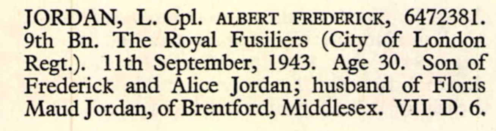
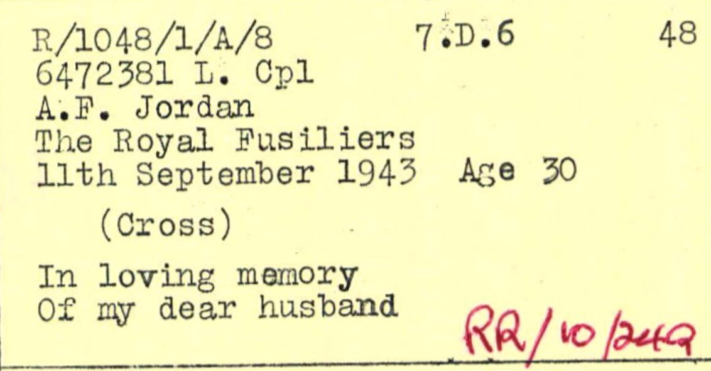

Albert Frederick Jordan 1914 - 1943
[ Home ] | [ Calendar ] | [ Surnames Index ] | [ Family History ]A grocery london co op society's shop assistant and the son of Frederick Jordan (a grocer's carman) and Alice Deal, Albert Jordan, the third cousin once-removed on the mother's side of <a href="I1.html">Nigel Horne</a>, was born in Brentford, London, England on May 17, 1914<span class="citation">1,2</span> and baptized in Camberwell, London, England on Aug 2, 1914. He married Floris Stephenson in Brentford around Nov 1940<span class="citation">7</span>.</p><p>Throughout his life, he lived on 10 Loring Road, Isleworth, London, England on Jun 19, 1921<span class="citation">9</span> and on Sep 29, 1939<span class="citation">1</span>. During 1943, he was serving in the army in Algeria (<em>regiment: Royal Fusiliers (City Of London Regiment); Rank: Lance Corporal; Service number: 6472381</em>).<p>He died on Sep 11, 1943 in Algeria<span class="citation">3,4,5,6</span> and was buried at Bone War Cemetery, Annaba, Algeria after Sep 11, 1943<span class="citation">8</span>.
Parents
- Frederick John Thomas was born on Apr 30, 1880
- Alice Rebecca was born on Nov 7, 1880
Citations
- 1939 Register - Findmypast (was the son of the head of the household)
- England & Wales births 1837-2006 - Findmypast
- Army Roll Of Honour 1939-1945 - Findmypast
- Commonwealth War Graves Commission Debt Of Honour - Findmypast
- World War 2 Allies Collection - Findmypast
- World War 2 Allies Collection - Findmypast
- England & Wales Marriages 1837-2005 - Findmypast
- <a href="https://www.cwgc.org/find-records/find-war-dead/casualty-details/938503/ALBERT%20FREDERICK%20JORDAN/">https://www.cwgc.org/find-records/find-war-dead/casualty-details/938503/ALBERT%20FREDERICK%20JORDAN/</a>
- 1921 Census Of England & Wales - Findmypast (was age 7 and the son of the head of the household)
Media
Albert Jordan - War Graves Entry

Albert Frederick Jordan - Headstone documentation

England & Wales births 1837-2006 - BMD/B/1914/2/AZ/000870/002
England & Wales marriages 1837-2005 - BMD/M/1940/4/AZ/000867/025
Commonwealth War Graves Commission Debt Of Honour - GBM/CWGC/ROLLOFHONOUR/001380621
Army Roll Of Honour 1939-1945 - GBM-WWIIARH-0117817
World War 2 Allies Collection - WW2/06905664
World War 2 Allies Collection - WW2/00117734
1921 Census Of England & Wales - GBC/1921/RG15/06201/0037/03
Family Tree

Generated by Ged2Site. Last updated on Jul 20, 2025